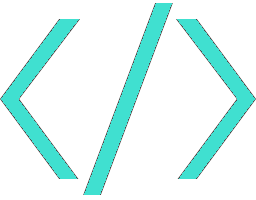

ByteBasics
ByteBasics – Building a strong foundation in coding, one step at a time.
Welcome to ByteBasics – your go-to guide for understanding the essentials of coding in a clear and structured way. Whether you’re an absolute beginner or someone looking to refine your skills, this site is designed to help you build a strong foundation in programming.
Coding might seem overwhelming at first, with its symbols, rules, and different programming languages. But at its core, every program is built using simple instructions that computers can understand. ByteBasics breaks down these fundamental concepts into easy-to-follow lessons, covering everything from basic syntax and variables to loops, functions, and data structures.
Our approach is straightforward: we focus on clarity, simplicity, and real-world applications. Through step-by-step explanations, practical examples, and interactive content, you'll gain a deeper understanding of how coding works and how to apply it effectively. Whether you want to develop websites, automate tasks, or dive into software development, mastering the basics is the first step to success.
At ByteBasics, we believe that coding is a valuable skill for everyone. No matter your background, learning how to write code empowers you to solve problems, think logically, and create something from nothing. Let’s take this journey together—one byte at a time.
